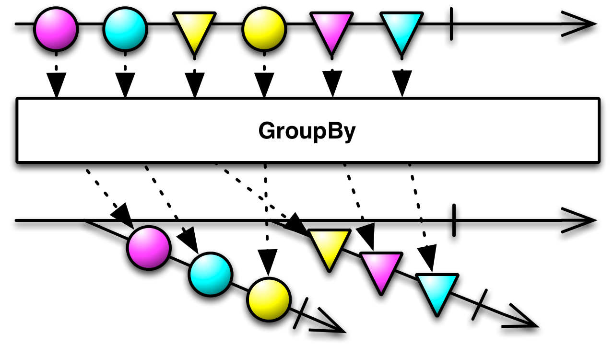
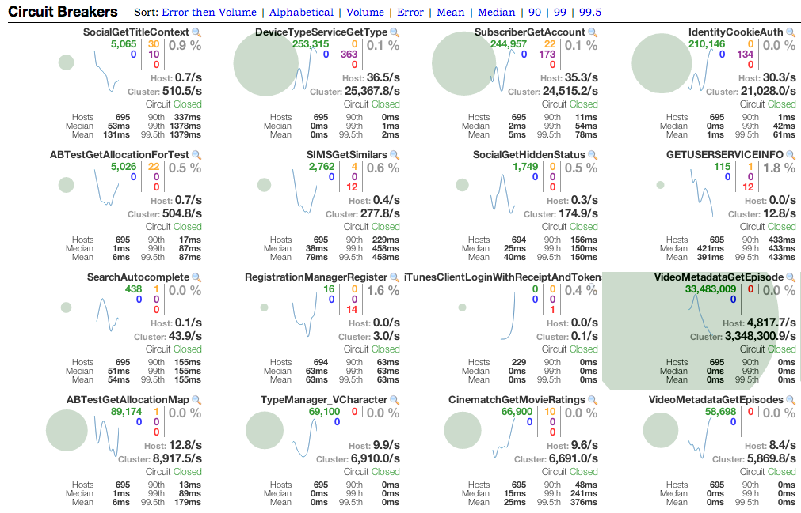

Ratpack, RxJava, Hystrix, etc.
Intro
Matt Yott github@myott
Reactive Design, RxJava
What is reactive design?
flexible, loosely-coupled and scalable

Responsive
[X] Usability & Utility
[X] Detect problems quickly
[X] Consistent upper bounds
This consistent behaviour in turn simplifies error handling, builds end user confidence, and encourages further interaction.
Resilient
[X] Stay responsive in the face of failure
[X] Failures are contained within each component
Elastic
[X] Stay responsive in varying workloads
[X] No contention points
[X] No central bottlenecks
Message Driven
[X] Asynchronous message-passing
[X] Non-blocking communication
[X] Apply back-pressure
[X] Failures (in contrast to errors) as messages
[X] Boundary between components — loose coupling, isolation, location transparency
So we get systems that are …
[X] Amenable to change
[X] Meet failure with elegance, not disaster
[X] Provide interactive feedback
[X] Less opinionated on how you compose data
So how do we achieve this?
RxJava!
Lightweight (1 .jar)
A library for composing asynchronous and event-based programs by using observable sequences
Compose high order function of data flow with the ability to error handle
Combine
odds = Observable.from([1, 3, 5, 7, 9]) // Picture a service call
evens = Observable.from([2, 4, 6]) // Picture another service call
Observable.zip(odds, evens, {o, e -> [o, e]}).subscribe(
{ println(it) }, // onNext
{ println("Error: " + it.getMessage()) }, // onError
{ println("Sequence complete") } // onCompleted
)Prints:
[1, 2]
[3, 4]
[5, 6]
Sequence completeTransform

Cont…
def numbers = Observable.from([1, 2, 3, 4, 5, 6, 7, 8, 9])
def groupFunc = { return(0 == (it % 2)) }
numbers.groupBy(groupFunc).flatMap({ it.reduce([it.getKey()], {a, b -> a << b}) }).subscribe(
{ println(it) }, // onNext
{ println("Error: " + it.getMessage()) }, // onError
{ println("Sequence complete") } // onCompleted
)Prints:
[false, 1, 3, 5, 7, 9]
[true, 2, 4, 6, 8]
Sequence completeFilter
numbers = Observable.from([1, 2, 3, 4, 5, 6, 7, 8])
numbers.take(3).subscribe(
{ println(it) }, // onNext
{ println("Error: " + it.getMessage()) }, // onError
{ println("Sequence complete") } // onCompleted
)Prints:
1
2
3
Sequence completeHystrix
What is Hystrix and what does it buy me?
Resiliency!
because
“In a distributed environment, inevitably some of the many service dependencies will fail."
Out of the box
[X] Stopping cascading failure
[X] Circuit breaking
[X] Provides fallback options
[X] Request collapsing
[X] Response caching
Above all else, fail quickly, fail 'safely'!
How can I use it today?
Starting wrapping all calls that go out over the network with HystrixCommand objects.
Examples
private static final HystrixCommandGroupKey hystrixCommandGroupKey =
HystrixCommandGroupKey.Factory.asKey("sql-profiledb")
rx.Observable<Long> insert(Profile profile) {
return new HystrixObservableCommand<Long>(
HystrixObservableCommand.Setter
.withGroupKey(hystrixCommandGroupKey)
.andCommandKey(HystrixCommandKey.Factory.asKey("insert"))) {
@Override
protected rx.Observable<Long> construct() {
observe(
execControl.blocking {
Map map = [firstName: profile.firstName, lastName: profile.lastName, email: profile.email]
sql.executeInsert(map, 'insert into profile (first_name, last_name, email) values (:firstName, :lastName, :email)')
}
.map { List<List<Object>> l ->
l[0][0]
}
.map { it.toString() }
.map(Long.&parseLong)
)
}
@Override
protected rx.Observable<Long> resumeWithFallback() {
observe(
execControl.blocking {
stormService.write(profile)
return 0
}
)
}
}.toObservable()Cont…
Turbine:

Ratpack
What is Ratpack?
Fully reactive, async, and non-blocking web framework
So you get
No impedance mismatch between service and framework.
Build HTTP applications that are
[X] Fast, efficient, evolvable
[X] Well tested
[X] High performance
[X] Low resource usage
[X] Non-opinionated
Core is made up of only
Java8
Guava
Guice
Reactive Streams
Out of the box integration with
[X] New Relic
[X] RxJava
[X] Hystrix
[X] Jackson
[X] Coda Hale
[X] Guice
[X] Geb …
Examples
Resources
Built By
&